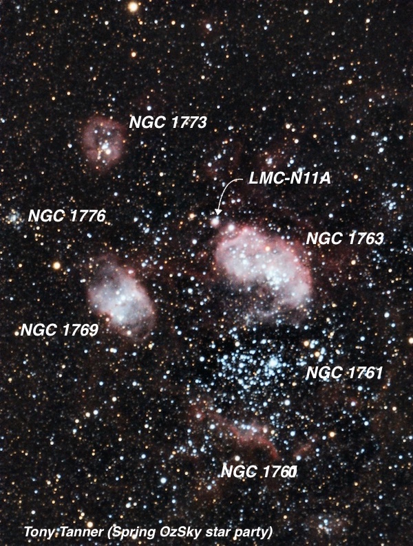
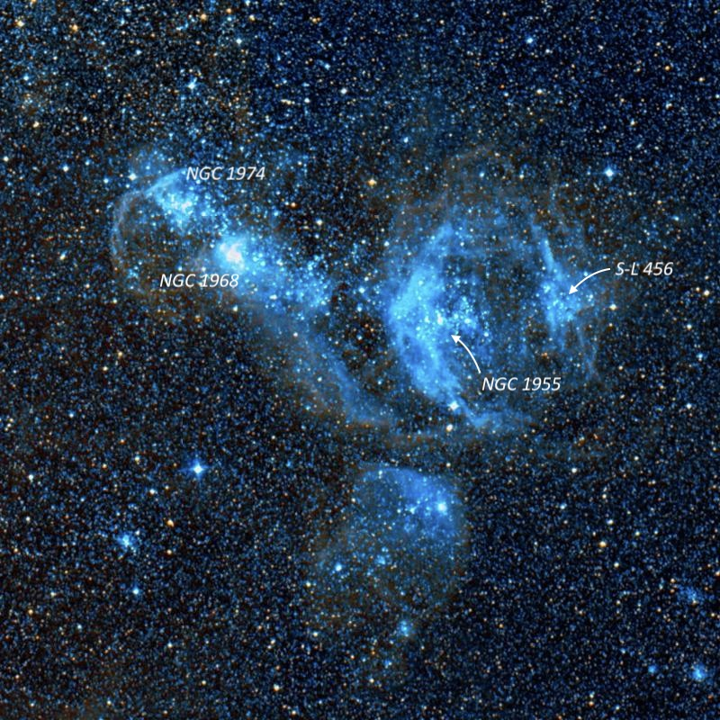
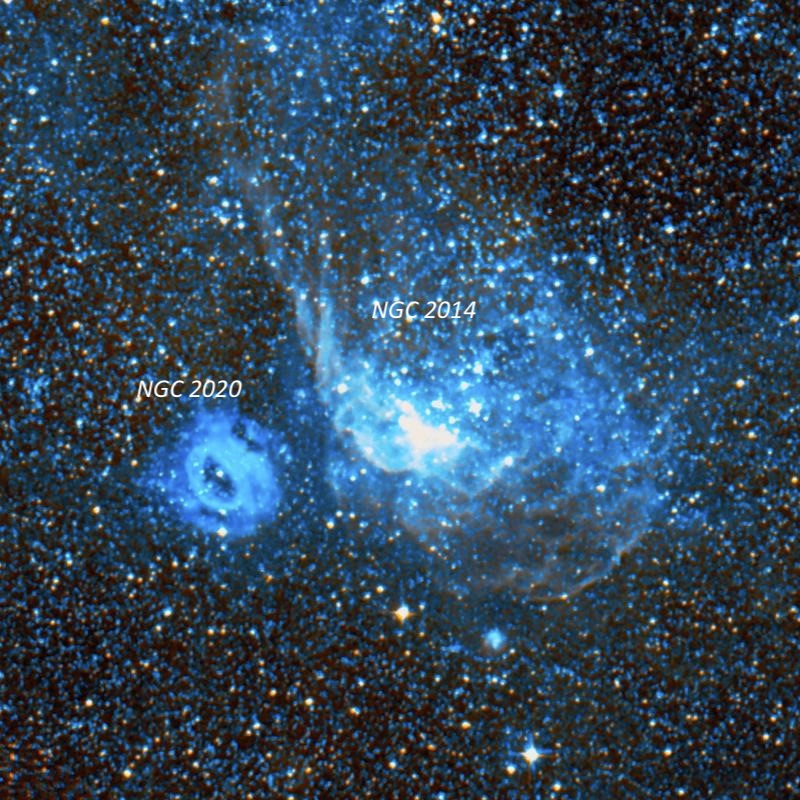
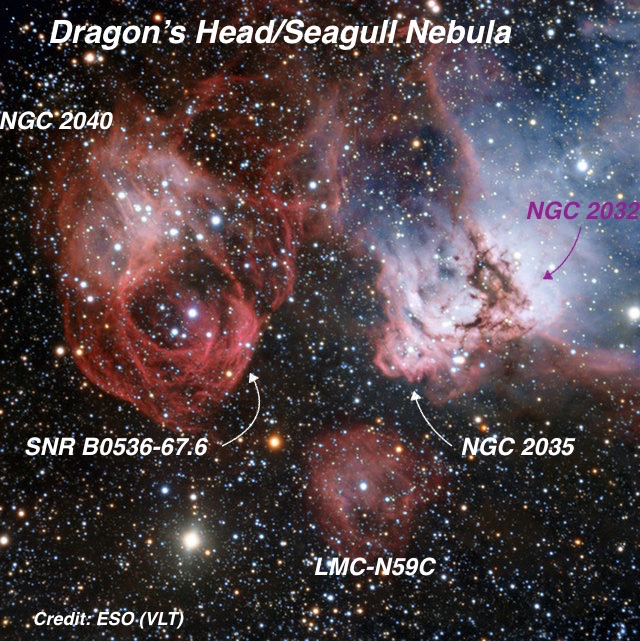

Nov 2010 (part 3) Australia
It's difficult to capture in words the visual experience of exploring the Large Magellanic Cloud (LMC), and to a lesser extent the Small Magellanic Cloud (SMC) through a large telescope. There's no galaxy in the northern hemisphere even remotely comparable. One eyepiece field in the LMC may contain a globular cluster, a couple of open clusters, a couple of clusters mixed with nebulosity and a compact HII region.
While several HII regions are visible in M33 and M101 (as well as other galaxies), and a large number of globular clusters can be identified in M31, they appear as either featureless fuzzy knots, or dim, stellar-like spots. But in the LMC, the brighter clusters look like galactic clusters and are partially resolved. In some cases, larger scopes can resolve dozens of individual members. The best emission complexes in the LMC such as the Tarantula Nebula, Bean Nebula, and Seagull Nebula, would rank as showpieces even if they were situation in the Milky Way!
Although I've had a number of opportunities to observe the LMC and SMC on past trips to Australia and Costa Rica, the Magellanic Clouds were never ideally placed – either they started to dip low in the southwest on April evenings or started to climb in the southeast on early July mornings. In November, though, the SMC begins the evening nearly on the meridian and halfway to the zenith. The LMC trails behind, becoming ideally placed as the evening progresses.
It's easy enough to point your scope just about anywhere in the LMC and snag a few clusters or nebulous objects, but identifying all these riches can be a challenge. Although the Uranometria 2000.0 Deep Sky Atlas and the Night Sky Observer’s Guide (Vol. 3) includes close-up charts of the LMC, they are not detailed enough for a large scope. To supplement, I used Mati Morel's LMC Visual Atlas 2000, printed star charts using the software Megastar, and labeled photographic finder charts.
Often faint, unresolved clusters may appear similar to small HII regions, but a UHC-type filter (I brought along my NPB - Narrow Pass Band - filter from DGM Optics) will enhance emission objects and often bring out additional structure. Here are detailed notes of three of my favorite fields in the LMC.
Field 1
The Bean Nebula (N11) is a complex of glowing gas, dark dusty clouds, massive young stars, a couple of generations of star clusters. It includes several individual NGC objects: NGC 1760, 1761, 1763, 1769, 1773 and 1776. . The Bean Nebula is the second most active stellar nursery in the LMC, only surpassed by the Tarantula Nebula. This region is on the northwest edge of the LMC and even from latitude +10°, I was able to observe it from Costa Rica with a 13-inch scope. But observing from Coonabarabran with a 30-inch reflector was a completely different experience. Some HST images of the Bean Nebula are at https://esahubble.org/news/heic1011/ and a small section was captured in a Hubble Heritage image at science.nasa.gov/missions/hubble/large-magellanic-cloud/.
NGC 1760 = N11F
04 56 44 -66 31.6
Size: 2’
NGC 1760 is a string of a half-dozen stars oriented east-west and ~1.7’ in length, over fairly bright nebulosity. The glow is brightest just south of the string and it extends to the west of the string for a couple of arc minutes. Irregular nebulosity also branches out to the south of the string for another 2' and involves a 12th-magnitude star. Another 2' string of north-south stars is on the west side of the haze. NGC 1760 is at the SW end of a stunning complex (N11) of clusters and nebulosity. These include the showpiece Bean Nebula (NGC 1763) centered 7' NE, NGC 1761, a larger cluster and nebulosity just 3' north, NGC 1769, a bright emission nebula 8' NE, along with NGCs 1773, 1776 and IC 2115.
NGC 1761
04 56 38 -66 28.7
Size: 4.2' × 3.0'
This bright, large cluster is sandwiched between the showpiece Bean Nebula to the north and NGC 1760 to the south. Roughly 80 stars mag 11 to 16 are packed into a 3.5' irregularly shaped cluster over some background haze. The stars are fairly even distributed except for a detached 1.3' group of a dozen stars off the NW side. Including this detached section, the overall size is 5' × 3.5'. A close bright double star (probably HJ 3716 = 10.2/10.9 at 5") is on the NW side of the main group.
Bean Nebula = NGC 1763 = N11B
04 56 49 -66 24.6
Size 5' × 3'
The Bean Nebula complex is the second largest stellar nursery in the LMC after the Tarantula Nebula. The showpiece is NGC 1763, which sits near the center of a stunning field of emission nebulae and clusters including NGC 1760 7' S, NGC 1761 3' S, NGC 1769 6.5' SE, NGC 1773 8' ENE and NGC 1776 11' E. NGC 1763 is a very bright and large irregular nebula, with a kidney bean or fetus shape. The main body extends 5' × 3', elongated SW-NE with a bulbous portion on the NE wide and an indentation (weaker nebulosity) on the south side. Overall, the surface brightness is very high, though uneven, and much fainter haze and filaments flow out from the Bean in most directions. Within the main body, the brightest portion is a loop on the SW side, and the second brightest is a section on the NE side. A cluster of roughly two dozen stars is superimposed on the Bean Nebula, including a number of 12-13th magnitude stars. On the NE end of the nebula is an E-W string of 3 stars, along with IC 2116, a bright, high surface brightness knot, ~15" diameter.
IC 2116 = N11A
04 57 16.3 -66 23 21
Size 0.6'
IC 2116 is a bright, high surface brightness knot, ~15" diameter. It lies at the NE edge of the Bean Nebula, roughly 3' NE of the center and it is certainly part of the same complex. Very faint haze at the edge of NGC 1763 appears to extend from IC 2116.
NGC 1769 = N11C
04 57 45 -66 27.8
Size 2'
NGC 1769 is a bright, large oval nebula oriented SW-NE, roughly 3'x2' in extent. In the center are three or four stars, with the brightest one 12th magnitude. A small, bright knot is on the south side, just 1' S of the 12th-magnitude star. The nebula is roughly centered within the Bean Nebula complex with showpiece NGC 1763 just 6.5' NW/
NGC 1773 = N11E
04 58 11 -66 21.6
2.7' × 2.1'
NGC 1773 is a fairly large, bright oval glow, ~2.2' × 1.5'. On first glance, two brighter stars are offset SW of the geometric center and separated by 15", but on closer inspection the more central star resolves into a very close double. In addition, a couple of fainter stars lie on the north side of the glow. The nebulosity is slightly irregular in surface brightness and brighter along the rim, particularly on the SW side. This emission nebula is located at the NE end of the Bean Nebula) complex.
NGC 1776
04 58 40 -66 25.8
Size 1.1'
The cluster NGC 1776 is located on the east side of the Bean Nebula complex. It appears moderately bright, fairly small, and is well concentrated with a small bright core encased in a 50"-wide halo. A couple of extremely faint stars are just visible in the halo. This cluster is situated 5' SE of NGC 1773 and 2.7' NE of a mag 10.8 star.

Field 2
The following objects include the regions N51 and N57. This region is packed with a number of nebulous clusters, resolved star clusters, high surface brightness knots and a fascinating annular emission nebula.
NGC 1955
05 26 10 -67 29.9
Size 1.8'
This cluster and emission nebula is near the western end of a beautiful curved chain of bright clusters involved with prominent nebulosity. The chain extends 17' WSW to ENE and includes NGC 1966 and NGC 1974 to the NE and a group of stars and haze (S-L 456) 4' W of NGC 1955. NGC 1955 includes as many as 40 stars in a 4' region, with a half-dozen mag 11.5-12.5 stars in a 3' gently curving arc elongated E-W. The cluster is immersed in a large, irregular haze that is brightest on the eastern side in a 30" circular glow. This is a locally brighter portion of a large irregular loop bowed out to the E and extending N-S for 6'-7' to a mag 9.5 star 3.5' S of the cluster. A fainter group of stars and haze lies 4' W (S-L 456 within association LH 51) and both halves form an 8' bubble (N51D) like a Wolf-Rayet shell or supernova remnant. NGC 1968 lies ~8' ENE and N1974 11' NE.
NGC 1968 = N51C
05 27 39.7 -67 27.8
Size 1.5’
NGC 1968 is the second in a great SW to NE chain of clusters involved in extensive nebulosity. The cluster is bright and very elongated 3' × 1' E-W with ~20 stars including a number of mag 12-13 stars. The cluster is surrounded by nebulosity (N51C) that brightens on the east end in a large, round knot and extends beyond the cluster on the south side for several arc minutes in the direction of NGC 1955 to the W. NGC 1968 is connected to NGC 1974, another nebulous cluster 3' NE and N1955 lies 8' WSW.
NGC 1974 = N51A
05 28 00 -67 25.4
Size 1.7'
NGC 1974 is the fourth in a great looping chain of clusters and nebulosity. This cluster is virtually attached to NGC 1968, only distinguished by less nebulosity and stars. There are roughly three dozen stars resolved in a 3' circular group including a number of mag 12-13 stars. NGC 1974 is involved in fairly bright nebulous haze (N51A).

NGC 2004
05 30 40 -67 17.2
V = 9.6; Size 2.7'
This bright, superb cluster contains a small, brilliant core and a highly resolved 3' halo that is packed with 50 stars. The surrounding field is quite rich in both faint and bright mag 11-12 stars. The NGC 1955/1968/1974 complex lies ~20' SW.
NGC 2011
05 32 19.8 -67 31 17
V = 10.6; Size 1.0'
NGC 2011 is a very bright, tight intense knot of four stars (a couple are quite bright) enveloped in a 1.5' triangular glow with a few additional stars resolved within the boundaries of the emission nebula. A 3' line of brighter stars oriented E-W passes through the south end of the glow. The surrounding fields include a number of fascinating objects with a cluster and star cloud ~6' E (S-L 567), a bright, compact cluster/nebula 8' NE (NGC 2021), a large bright cluster/nebula 10' S (NGC 2014), a large ring-shaped emission nebula (NGC 2020) 12' SSE and the Seagull Nebula complex (NGC 2030/2032/2035) 17' E.
NGC 2014 = N57A
05 32 20 -67 41.4
Size 1.8'
NGC 2014 is a very bright, large cluster with nebulosity. Roughly 50 stars resolve in a 5' region (no distinct boundary on the north side), including many in a 2' string, elongated N-S. A 10th-magnitiude star (brightest in the cluster) is at the south end of this string. A portion of the cluster is immersed in nebulosity (N57A), most prominently on the SE side of the cluster. Irregular haze (roughly elongated SW-NE) extends out of the cluster for a couple of arc minutes on the east side, spreading south and north. NGC 2014 forms an interesting contrast with emission nebula NGC 2020 5' ESE. The Seagull Nebula (NGC 2030/2032/2035) lies ~20' NE.
NGC 2020 = N57C
05 33 13 -67 43.0
Size: 2.5'
NGC 2020 is a fairly bright, roundish annular emission nebula, slightly elongated SW-NE, 3'x2.5'. The inner edge of the annulus is slightly brighter and sharply defined with a relatively large dark center, ~45" x30". North of center in the ring is a 13th magnitude star, which is roughly centered in the emission nebula. A 12th magnitude star lies 1.3' S of the central star, at the southern edge of the nebula. Two fainter stars are just north and south of the mag 12 star and the trio is collinear with the central star. NGC 2020 forms a striking due with NGC 2014 (cluster and emission nebula) 5' WNW.

NGC 2021
05 33 30.3 -67 27 11
Size 0.9’
NGC 2021 is a bright, compact knot surrounding two resolved stars, slightly elongated, ~20" × 15". This knot is in the northern end of a very large, elongated cluster or star cloud (S-L 567). A very elongated stream of stars, 5' × 1', extends mostly south of NGC 2021. It includes a mix of brighter and fainter stars (association LH 78). The densest concentration is a 2' group (S-L 567) on the south end with a number of mag 12-14 stars. Roughly a total of 50-60 stars were resolved. The Seagull Nebula complex (NGC 2030/2032/2035) lies 12' SE.
Field 3
The magnificent Seagull Nebula (N59) is just east of the objects described above. I also observed this region with a 24-inch reflector on my last trip to Australia. Because I had taken detailed notes previously, I decided to just soak in and marvel at the view of this bright, detailed object. I'm including these notes as this object is one of my favorites.
KMHK 1098
05 34 41.3 -67 30 14
Size 0.9'
Before viewing the Seagull Nebula (NGC 2029-32-35-40), I picked up this very small, moderately bright knot adjacent to a mag 13 star. Without a filter this object has a bright, quasi-stellar core. Adding a UHC filter increased the size to 20", so there appears to be an emission component. Located 2.5' SW of mag 9.3 HD 269804 and 6' NW of the Seagull Nebula.
NGC 2030
05 35 00.5 -67 33 18
2.4' × 2.0'
NGC 2030 is the NW component of the Seagull Nebula. It appears as a bright, highly structured 7' × 5' emission nebula. The most prominent part of NGC 2030 is a bright streak elongated E-W that extends west from mag 12.3 HD 269810. A large mass of nebulosity spreads to the north from this streak in a more circular 2' patch. This object is incorrectly identified as NGC 2029 in modern catalogues and atlases.
NGC 2032
05 35 20.6 -67 34 06
2.0' × 1.0'
NGC 2032 is possibly the brightest section of the Seagull Nebula (similar to NGC 2035 1.6' SE). It consists of a very bright, elongated ~SSW-NNE patch, 2'x1', with an unusual kidney-bean shape than is indented or concave on the east side. NGC 2032 is just separated from NGC 2035 by an elongated dark lane oriented SSW-NNE on the east side. A faint, thin streamer of nebulosity shoots to the north from NGC 2032. Mag 11.4 HD 269808 is off the SW side.
NGC 2035
05 35 33 -67 35.1
1.6' × 1.2'
This is the southeast section of the bright Seagull Nebula. At 200× using a UHC filter, it appeared very bright, moderately large, with a very irregular shape, similar to an anvil. The very knotty, complex structure was elongated N-S, 1.6' × 1.0', with the widest part of the anvil on the south end. NGC 2032, another very bright section, is very close west (roughly 1.6' between centers) and the two sections are separated by a dark lane oriented SSW-NNE. A very faint streamer attached on the NE side flows to the north (NGC 2032 has a similar but brighter streamer). N59C, a fairly small detached patch, ~1.2' in diameter, is close SE.
NGC 2040
05 36 05 -67 34 01
2’
NGC 2040 is a bright, irregularly round glow, ~2' diameter, located ~4' ENE of the Seagull Nebula and part of the same emission complex. The nebula surrounds a cluster of roughly 15 stars. A UHC filter at 200× provided an excellent contrast gain and revealed a very irregular outline. The DSS shows delicate filaments to the south forming a large loop or shell (possibly a SNR shell) although this extension was not recorded.
